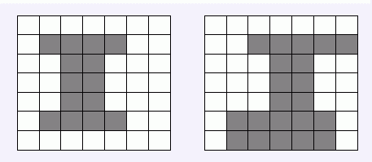
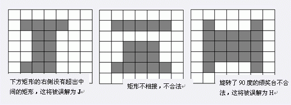

IOI2002的颁奖典礼将在YONG-IN Hall隆重举行。人们在经历了充满梦幻的世界杯之后变得更加富于情趣。为了使颁奖典礼更具魅力，有人建议在YONG-IN Hall中搭建一个I字型的颁奖台，以此代表信息学Informatics。考虑到比赛的赞助商们可能要在YONG-IN Hall中摆设了许多展示台，他们可能不愿意移动展示台的位置。你作为IOI2002的金牌得主自然地成为了他们求助的对象。
YONG-IN Hall是一个矩形的网格区域。每个赞助商的展示台都占据了若干个单位网格。I型颁奖台将正向搭建，且平行于YONG-IN Hall的边缘。I型颁奖台是由三个矩形相接叠成的，其中上方和下方的矩形的两侧必须都超出中间的矩形，否则将被误解成T, L, J等字母。例如：

这是两个合法的I型颁奖台，而以下三种情况均不合法：

希望你编程寻找面积最大的I型颁奖台，使其不覆盖任何展示台。